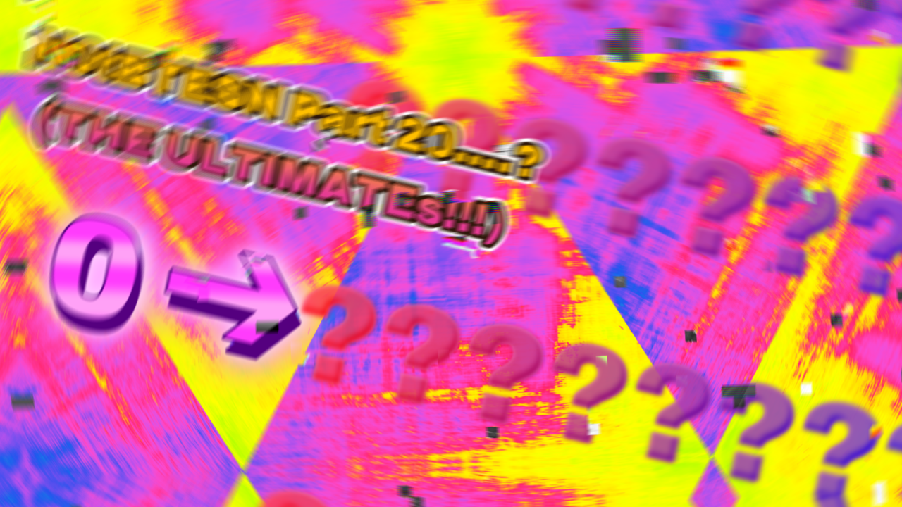
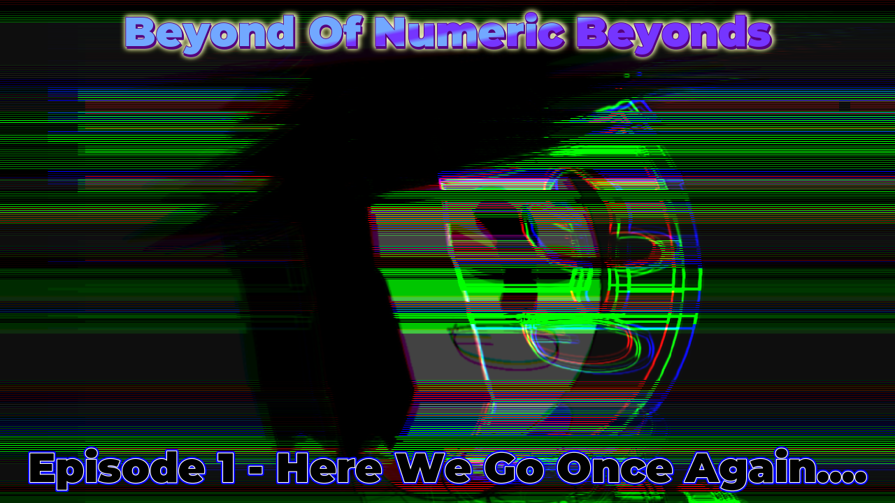

Gigane's Website, Build (25).002
Numbers 0 to Beyond The Every Single Number
This was V3 of My Number Series... And First Series which is Finished (Finished in A YEAR + 5 Months)

The Thumbnail is from
Part 20
Playlist (Official)
Ultimate Extension of Entire Googology
My (Joshua's) THERE'S NO GOAL-Inspired Series Currently Focused on Ep1Seg3
since i'm not working for a long time and yeah lack of motivation
NO THUMBNAIL FOR NOW
Official Playlist
Gigane'd Quantic Kingdom
The Quantum Googology (or for shorten, QG) Series that uses Holo-QG which is MORE POWERFUL
than ANY Meta-QG
The Series uses "Build (any number here)" instead of Sections, Seasons [ETC.] so it makes THE SERIES very UNIQUE
.jpg)
Currently there's no planned final part
most likely 30, 40 or even.. 50!
Beyond of Numeric Beyonds
and... Beyond of Osiris Legandria (N0tBTESN Finales) mostly uses Fictillar Hoyogosim (Powerful Version of Hologology) also It would be so hard to make 'cause IT HAS CUTSCENES
If you want to voice Anyone in BoNB Contact To me in Discord: outspace_gigane

BTW, The Series has 20 Parts (again)..
Note: Actually I have Some Projects that COULD NOT shared Currently (like HP-LN at least until it's finished) but will be shared in NEXT updates